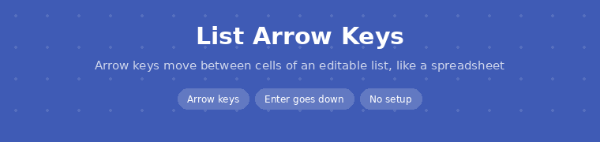
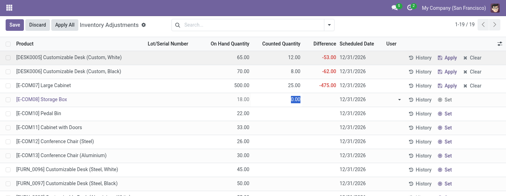
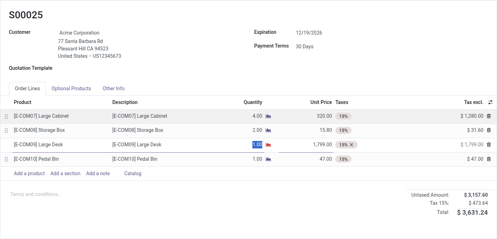

While you type in an editable list, Odoo keeps the arrow keys inside the text box. With List Arrow Keys you type a value, press Down, and type the next one, like in a spreadsheet.
Odoo 17.0 Community & Enterprise Free · LGPL-3

Counting stock: type 12, press Down, type 8, press Down. The cursor stays in Counted Quantity.
Go to the same column on the line above or below. The line you leave is saved first.
Enter keeps the column too, instead of jumping to the first one. On the last line it still adds a line.
They move the text cursor first, and go to the next or previous cell at the end or start of the text.
Order lines, invoice lines, stock counts: every editable list. Dropdown fields keep their own arrow keys.

Order lines on a quotation: Down goes from one Quantity to the next.
Free and open source (LGPL-3) by Paulius Gaizauskas · Questions or bugs: GitHub issues